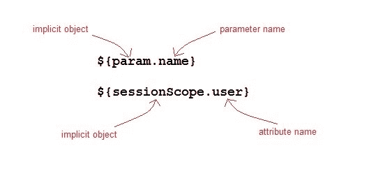

JSP 表达式语言
表达式语言被添加到 JSP 2.0 规范中。EL 的目的是产生无脚本的 JSP 页面。JSP 中 EL 的语法如下:
${expr}
这里 expr 是一个有效的 EL 表达式。表达式可以与静态文本/值混合，也可以与其他表达式组合形成更大的表达式。

EL 表达式是如何使用的？
在 JSP 页面中，EL 表达式有两种使用方式
As attribute values in standard and custom tags. Example:
<jsp:include page="${location}">其中位置变量在 jsp 页面中单独定义。
表达式也可以用在
jsp:setProperty中来设置一个属性值，使用其他的 bean 属性，比如:如果我们有一个名为 Square 的 bean，它有长度、宽度和面积属性。<jsp:setProperty name="square" property="area" value="${square.length*square.breadth}" />以 HTML 标记输出:
<h1>Welcome ${name}</h1>
要停用 EL 表达式的求值，我们指定页面指令的isELIgnored属性如下:
<%@ page isELIgnored ="true|false" %>
JSP EL 隐式对象
以下是 EL 中的隐式对象:
| 隐式对象 | 描述 | | 对象 | 它表示页面上下文对象。 | | pageScope(页面范围) | 它用于访问在页面范围内设置的任何变量的值 | | 请求作用域 | 它用于访问在请求范围内设置的任何变量值。 | | 会话范围 | 它用于访问在会话范围内设置的任何变量值 | | 应用范围 | 它用于访问在应用范围内设置的任何变量值 | | 参数 | 将请求参数名称映射到单个值 | | 参数值 | 将请求参数名称映射到相应的字符串值数组。 | | 页眉 | 包含标题名称和单个字符串值的映射。 | | 标题值 | 将包含标题名称的映射到相应的字符串值数组。 | | 甜饼干 | 包含 cookie 名称和单个字符串值的映射。 |
JSP EL 示例
让我们举一个简单的例子来理解 JSP 表达式语言，
index.jsp
<form method="POST" action="welcome.jsp">
Name <input type="text" name="user" >
<input type="submit" value="Submit">
</form>
welcome.jsp
<html>
<head>
<title>Welcome Page</title>
</head>
<body>
<h1>Welcome ${param.name}</h1>
</body>
</html>
电致发光中可用的算术运算
以下是 el 中可用的算术运算符:
| 算术运算 | 操作员 |
| 添加 | + |
| 减法 | - |
| 增加 | * |
| 分开 | / and div |
| 剩余物 | % and mod |
逻辑和关系运算符在 EL 中可用
以下是逻辑运算符和Comparator在电致发光中的应用:
| 逻辑和关系运算符 | 操作员 |
| 等于 | == and eq |
| 不平等 | != and ne |
| 不到 | < and lt |
| 大于 | > and gt |
| 大于或等于 | >= and ge |
| 小于或等于 | <= and le |
| 和 | && and and |
| 或者 | || and or |
| 不 | ! and not |